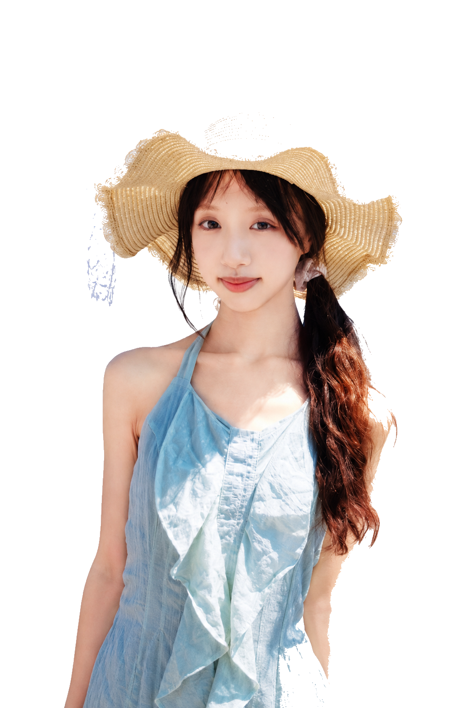
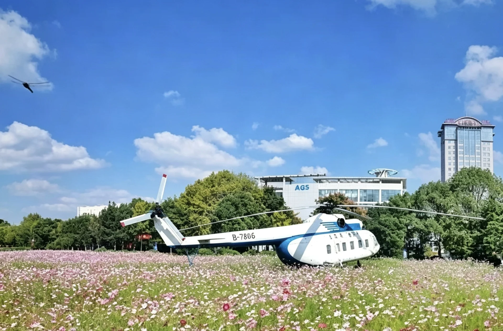
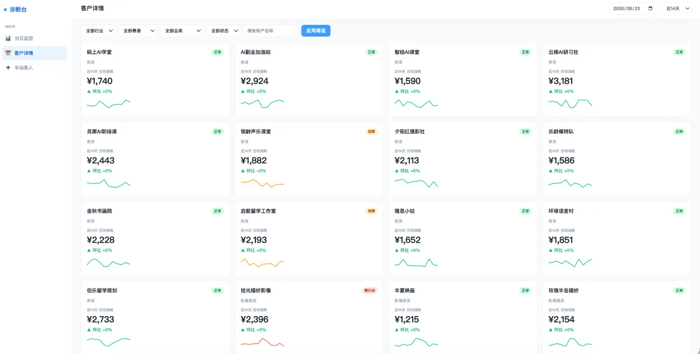
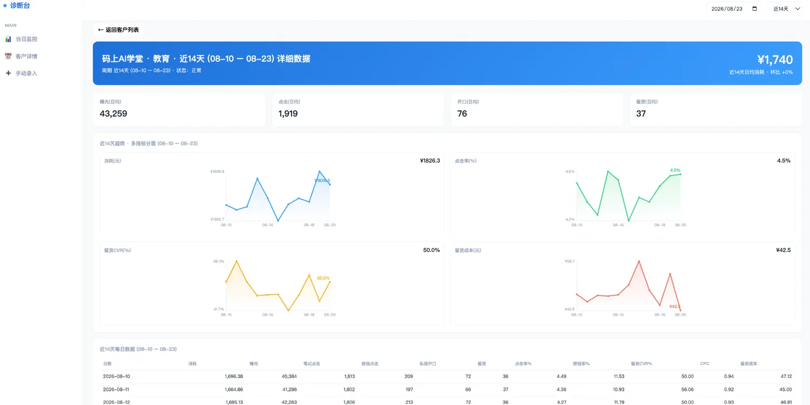
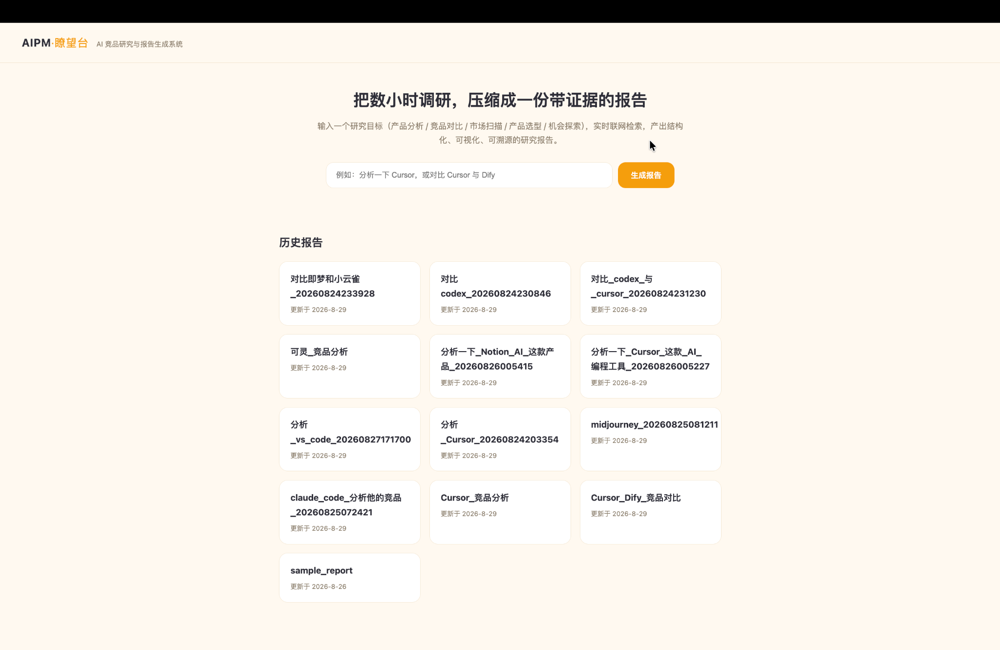
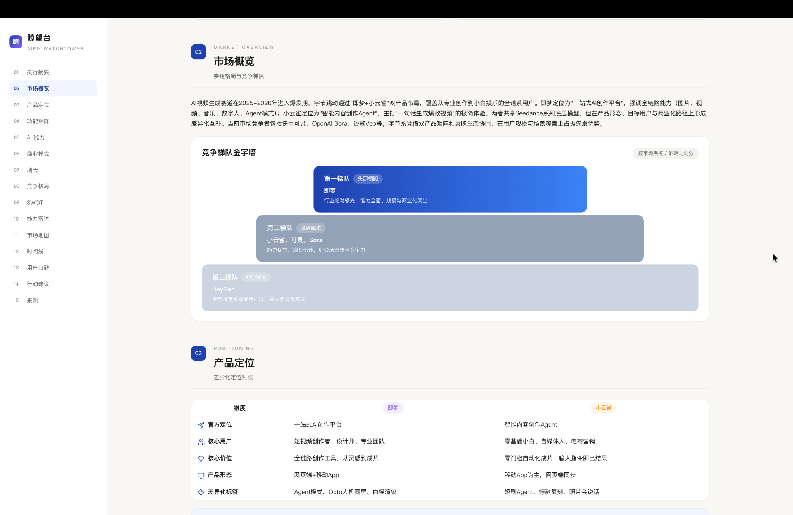
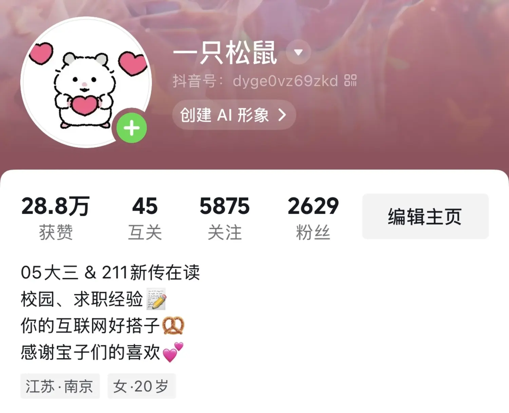
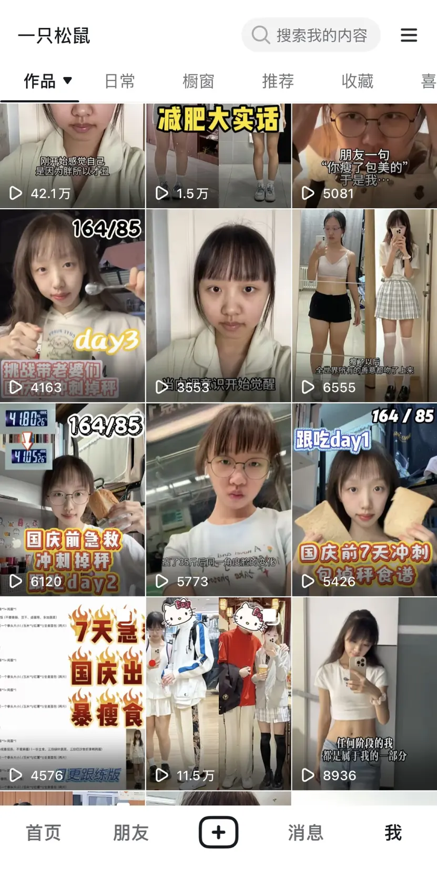
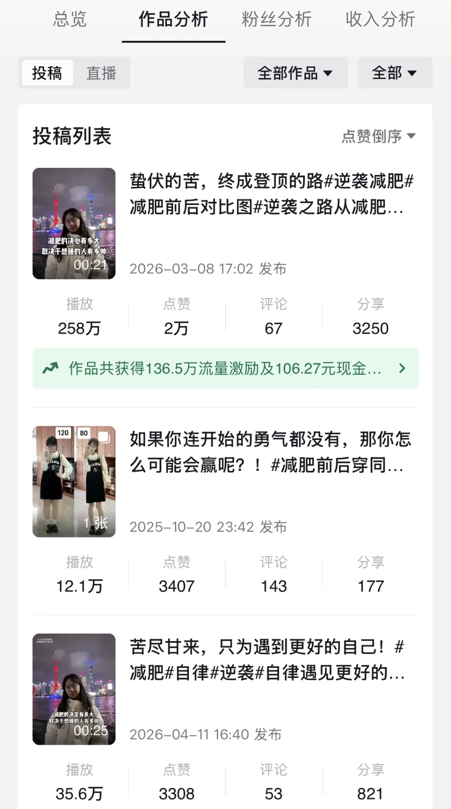

WHO AM I?
孟承泽 / Averymeng


孟承泽 / Averymeng
历史古都 - 邯郸
在南京念书，在上海 / 北京实习，未来会走向更大的世界！
大四学生，但工龄三年 🤔
雅思 7（6.5），GRE 322，英语可作为工作语言


NUAA学习传播学、新闻学、视听创作、广告策划与创意等课程
第17届中国计算机设计大赛一等奖 · 优秀学生奖学金 · 三好学生


每一个文件夹，都是我认真投入过的小世界。

从智能产品到 AIGC 创作，让想法长出新的可能。



面向平台商业化销售的周度客户投放复盘场景设计并落地复盘诊断 Agent，将人工逐层查数的复盘转为分钟级任务。梳理曝光—点击—开口—留资转化链路，结合规则与 LLM 完成异常识别、下钻归因与策略生成，并通过 Case 与 Badcase 持续迭代。


面向 AI 产品经理的智能研究与报告系统。提交研究目标，经一次简报确认后实时检索、按维度拆解并绑定来源，输出结构化可视化报告。把数小时的跨源调研，压缩为一次提交、一次确认、一份报告。
依托南京绒花非遗文化，融合六朝古都文化、地标建筑与金陵四季花卉意象，采用 Midjourney 等 AIGC 技术打造国风 Q 版潮玩 IP「绒绒」，产出 13 款盲盒形象与衍生品物料。
查看完整作品 ↗通过 AIGC 技术生动还原古代制皂场景，生成古法制皂视觉素材，产出南京肥皂品牌科普短片，助力品牌大众化传播。
搭建 AI 辅助创作、虚拟场景生成与实景合成的智能化科普视频链路，使用大模型生成分镜脚本，结合文生图技术搭建核实验室等虚拟场景。

把品牌故事写进真实的用户场景里。
面向泛运动人群策划三期整合营销活动，聚焦家庭和轻运动洗护场景，通过社交媒体种草、直播转化与线下体验，助力品牌建立认知并实现销售转化。
3 期整合营销聚焦学生、上班族与妈妈群体的场景痛点，以场景化营销、权威背书和数字化互动构建三维策略，提出 AI 肤质检测、AR 滤镜、线下快闪与 UGC 挑战。
3 类核心人群围绕大促主题与 IP 独立搭建多市场、多端专题页，规划首页入口和主题楼层，增加行动按钮与稀缺性提示，提升页面流量承接效率。
点击率 +70%围绕美妆、潮玩潮服等品类分析用户偏好与热点趋势，针对 LABUBU 等节点设计内容方案，基于数据优化封面文案并突出利益点。
ROI +30%
镜头一开，每一种情绪都有了自己的形状。
以女性救赎与女性力量为主题，通过倒叙串联李茹婙在人生不同阶段的经历，以影像回应真实存在的女性困境。
DIRECTED BY AVERYMENG以青春遗憾的双向救赎为内核，用生活化叙事捕捉细碎的青春情绪，呈现遗憾与释然交织的成长故事。
DIRECTED BY AVERYMENG参加苏州工业园区校园主播大赛，用镜头展现自己对这座古今交融、古典文艺和科技创新融合的城市之热爱。在视频中通过前期无人机航拍、相机延时摄影等手段，后期采用AE/PR等工具完成了成片制作，视频获得了嘉宾的一致好评。
DIRECTED BY AVERYMENG
翻开这一页，你会遇见镜头、远方和一只松鼠。
把生活讲给世界听
把瞬间藏进镜头里
世界等我去看看

用镜头感知世界，捕捉美好瞬间。

梦想是环游世界！ My little dream: see the whole world. ✦


一只松鼠的内容宇宙
从 0 到 1 搭建自己的抖音账号，分享减肥干货与日常生活，打造「女大学生 + 减肥逆袭成功」的人设，产出多条百万播放爆文。


